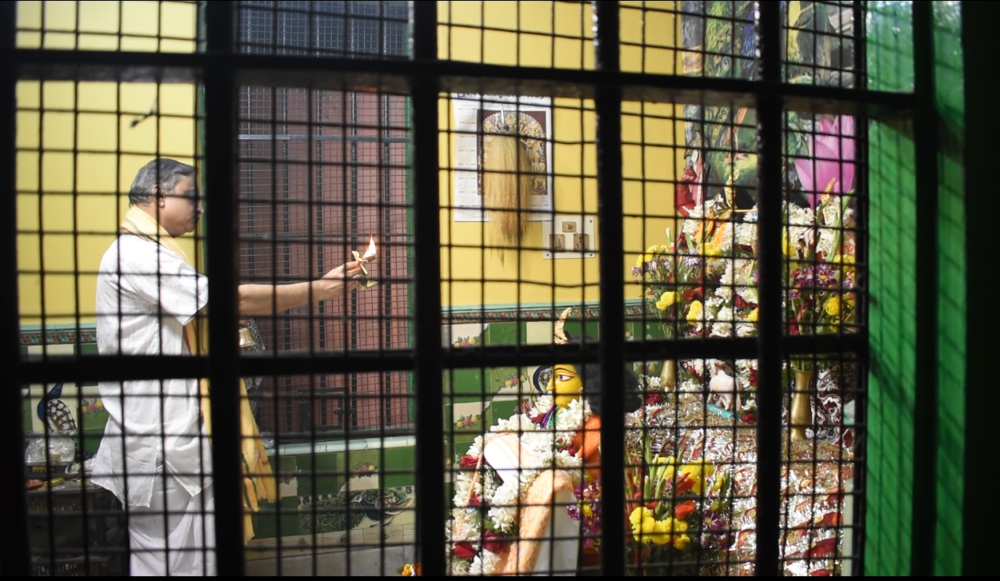
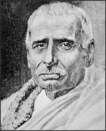
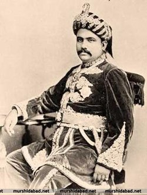

Our Short History

Shree Gouriya Baishnab Sammilani is the brain-child of Prabhupoad Atul Krishna Goswami. In 1318 B.S., on the 1st of Baishakh, the idea was mooted out at the house of Sri Atul Krishna in the Presence of Sri Paresh Chandra Dutta, Vakil, Howrah and of Sri Bamacharan Basu, Inspector of Cassimbazar Estate. This was later on supported by Rai Jatinadra Nath Choudhury of Baranagar, Sri Motilal Ghosh, Editor, Ananda Bazar Patrika and Pandit Sri Rashik Mohan Vidyabhusan, Maharaja Sri Manindra Chandra Nundy Showed keen interest in the idea. The idea took a concrete shape on the 14th Baisakh, 1318 B.S. at the Cassimbazar Rajbati at 302, Upper Chrcular Road (now Acharya Jagadish Chandra Bose Road). The Sammilani came into being on that auspicious day. Since then the Sammilani has been surved by many illustrious sons of Bengal. They are Sri Paresh Chandra Dutta, M.A. N.L., Sri Balailal Mallick, Prof. Dr. Bhagabat Kumar Shanstri, Rai Bahadur Rasomay Mitra, M.A., Prof., Amulya Charan Vidyabhusan, Sri Kishorimohan Gupta M.A., Sri Bhabataran Sarkar, Sri Atul Krishna Goswami, Sri Devaprasad Sarbadhikari, Sri Hirendra Nath Dutta, M.A. B.L., Dr. N. N. Saw, Sri Kanupriya Goswami, Sri Prangopal Goswami, Sri Radhabinod Goswami, Sri Satyandnda Goswami, M.M.Lakshamana Shastri (Dravid), M.M. Pramathanath Tarkabhusan, Sri Ramdas Babaji, Dr. Sundari Mohan Das, Rai Bahadur Khagendra Nath Mitra, M.M. Sitikantha Bachaspati, Sri Janakinath Bhagabatbhusan, Kumar Kartick Chandra Mallick, M.M. Shyamadas Bachaspati, Dr. N.N. B. Rai Choudhury, D. Litt., Sri S.N. Basu, M.A. B.L. Maharaji Manindra Chandra Nundy donated Rs.12,000/- for buying a piede o land for the Samilani. Sri Netai Charan Laha constructed the Nat Mandir at a cost of Rs. 12,000/-, Sri Haridas Nundy donated nearly Rs.10,000/- for the building of Sree Mandir. Sree Mandir ws built in 1340 B.S. and Sree Sree Radha-Govinda Jew Sree Sree Gour-Netai, and Sree Sree Sreedhan Jew were installed in the year. Advent of Sri Sri Radharani has a history. Mr. G.D. Scott of 6, Mango Lane narrates the history as follows on 31.3.33 (A.C.). ìThe Idol was given to my wife by a Mohommedan Curio Dealer in Asansol just before we left for England 9n 1919. We had no idea that..

Garbagriha
It was an Idol or had my religious significance. It was sent to England with some other items of interest and reached there in January 1920. My wife came out in the cold weather of 1920 on what was to have been a short holiday, but circumstances prevented her from returning to England as arranged, and the idol was sent back of India again. It arrived in India as far as I can remember about October or November, 1921. It was put in or drawing room as an ordinary curio. In 1924 we were informed that what we had taken to be a curio was in reality an Idol and that it must have been taken from some temple. As we did not like the idea of retaining anything of this nature in the house, I took it to the office, with the idea of finding someone who could restore it to its proper place. Mr. A.N. Laha took it but returned it a few days later as I believed, it had brought him bad luck. It was then given to Mr. Basanta Kumar Chatterjee and I was informed by him two or two or three years later that he had made proper arrangements for it to be put into a temple or some religious institution. I do not think I saw Mr. Chatterjee again until the 17th of this month when he informed me of the present position and arrangement made for the final disposal of the idol. At his request I went down to your Sammilani on the evening 18th of this month, when I saw the Idol again for the first time after about 8 or 9 years.î Sree Sammilani has a Library and Reading Room. Rai Bahadur Nagendra Nath Dutta donated Rs.5,000/- for the construction of the Library and Reading Room. The Library owes its origin to Sri Atul Krishna Goswami who made over all his books to Sree Sammilani. The Library was opened by M.M. Haraprasad Shastri in 1334 B.S. on the 4th of Ashar, Prof. Phanibhusan Mukhopadhya M.A. was the first Librarian. The other Librarians of subsequent years were Sri Swarupdas Babaji, Rai Bahadur Nagendra Nath Dutta, Dr. Jnanendra Nath Sinha, M.D., Sri Jatindra Nath Bhattacharjee, M.A. Tathvaratnaker, Prof. Amulya Chandra Aikat, Dr. Kalikindar Sen Gupta, Pandit Anadi Mohan Goswami, Sri Ramendra Nath Bose, Sri Manindra Nath Aharya and others. The Library has more then 2500 books and 200 manuscripts.

Gouriya Manuscripts
The Sammilani was its own Journal ìGOURANGA SEVAKî. The first editor was late Prof. Lalitmohan Bandhapadhya. The other Editor of subsequent years were Pandit Rashik Mohan Vidyabhusan, Pandit Amulya Charan Vidyabhusan and Prof. Krishna Gopal Goswami, Asuthosh Professor of Sanskrit, Calcutta University. This is regretted that owing to several constraints, the journal could not be published for a consdiderble time till date. Sree Sammilani has published 27 books books on Vaishnavisam. The most important books are ìBhaktimalî, ìSri Narottam Thakurer Prarthanaî ìSri Brihadbhagavatamritaî, ìSri Bhaktirasamrita Sindhuî, ìSri Chitanya Chandradoyî, ìBhakter Jayî, ìAjamil Charitî etc. During the communal riots of 1946 ñ 1947 and during the consequent exodus of Hindus from east Bengal, Sree Sammilani gave shelter to hundreds of regugees from East Bangal and fed them for about a year. Sree Sammilani has Sri Gourangha Chatuspathi for the Spread of Sanskrit education.

Our Library
All the important Vaishnavic ìUtsavaî are held. Last but not the llist, the Sammilani gained unstinted patronage and support from a galaxy of eminent personalities most of whom graced the ceremonial occasions of the Sammilani in the past. To mention a few in their past capacities, Honíble Governor of W.B., Honíble Ministers of the State Govt, Honíble Judges, Honíble Speaker of West Bangal Assembly, Sri Sri Sitamandas Omkurnath wished the Sammilani a grand success in their religions sojourn.
Our Founders

Haraprasad Shastri
Know More

Manindra Chandra Nandy
Know MoreAfter 25 years, we celebrate Gouriya Baisnab Sammilan at Sri Mandir on the occasion of Baisnab Saint, Sri Jagatbandhu Sundar,150th birth anniverdary. All Gouriyas attended this ceremony on 11th January 2021.
Gallery